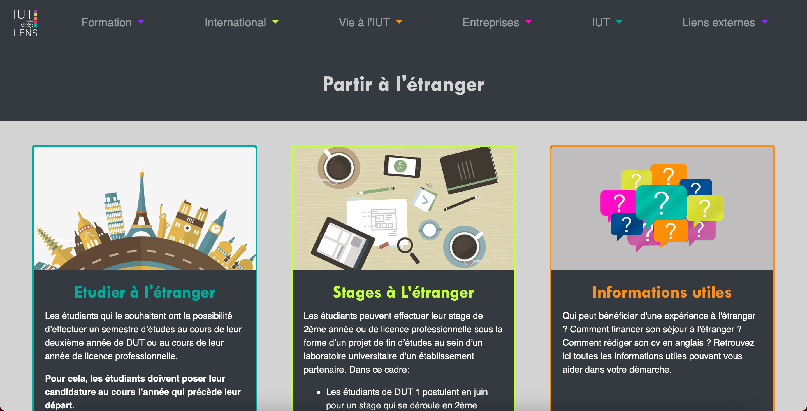

Refonte d'un site web
IUT de Lens, Novembre 2019 - Décembre 2019
Projet de Semestre 1
Lors du premier semestre, nous avons comme objectif principal la refonte du design du site web de l’IUT par groupe de trois étudiants.
Le but de notre projet etait de refaire les différentes pages suivantes :
- Partir à l’étranger
- CV
- Formulaire
- Objectifs des stages
Pour la réalisation nous avons utilisé ici les langages HTML & CSS ainsi que le framework Bootstrap.
